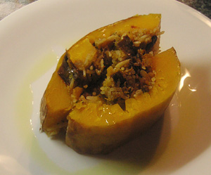

Kürbis a la Hamilton
5 von 6Ein Butternuss-Kürbis halbieren und aushölen. Eine Zwiebel, Knoblauch und das ausgehölte Fleisch andünsten. Ca. 7 getrocknete Tomaten beigeben. ein Tl gemahlene Koriandersamen und eine Messerspitze getrocknete Chilischote beigeben. Eine handvoll getrocknete und eingeweichte Steinpilze mit dem Wasser beigeben, einige Minuten kochen lassen. 150 g Basmatireis daruntermischen. Alles in die Kürbishälften geben und den Kürbis wieder zusammensetzen. Mit Alufolie einwickeln und bei 200 Grad eine gute Stunde im Ofen garen bis der Kürbis beim einstechen sich weich anfühlt.
